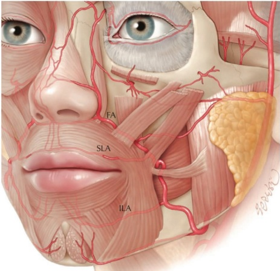
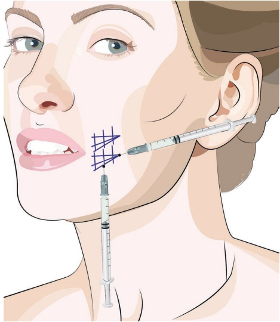
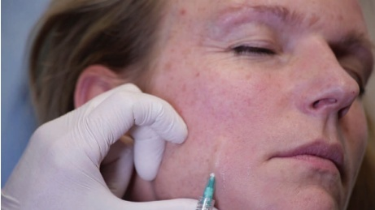
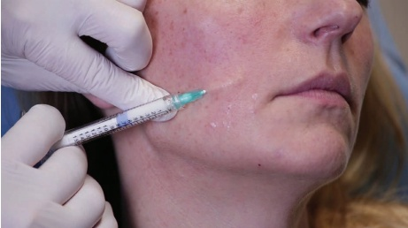
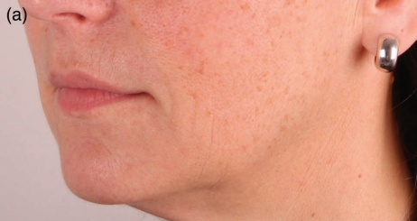
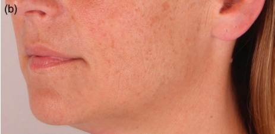

19 面部中三分之一：褶皱纹（Accordion Lines）
面部中三分之一的褶皱纹
JANI VAN LOGHEM
19.1 引言
褶皱纹可见于颊部，位于鼻唇沟外侧和口角线（marionette lines）外侧。这些褶皱纹是衰老过程中面颊前移和下垂，并伴有皮肤松弛的直接结果。因此，理想的治疗方法包括提升技术，将面颊重新定位到其原始解剖位置。关于面颊提升的讨论将在“面颊丰容”章节中更详细地介绍。在本章中，我们仅关注褶皱纹本身。
19.2 安全注意事项
注射褶皱纹时，应注意不要注射过深，因为面部动脉（facial artery）在鼻唇沟外侧的皮下层附近走行。还应注意避免损伤上唇动脉（superior labial artery）和下唇动脉（inferior labial artery）（图 19.1）。
19.3 褶皱纹锐针技术 对于注射定位，参见图 19.2

19.3.1 分步技术
-
检查并标记垂直褶皱纹的位置。
-
使用高倍稀释的羟基磷灰石钙（CaHA）（每 1.5 mL CaHA 配制 0.5–1.5 mL 利多卡因）和 28G 锐针。
-
将产品小心地置于最明显的褶皱纹内，进行皮下逆行线性填充。确保产品不会放置过浅（不能透过皮肤看到针的灰色部分）（图 19.3）。
-
将针垂直于褶皱纹方向，在真皮-真皮交界处采用扇形技术放置多个逆行线性填充物（图 19.4）。
-
根据需要进行手动按摩以均匀分布。
有关治疗前后的效果和应用技术，请参见图 19.5。



19.4 术后护理
如有必要，可手动按摩该区域以使产品均匀分布，一只手指置于口内，一只手指置于口外。水肿可能不均匀，但应在一两天内消退，尤其在使用锐针时可能会观察到瘀伤。
19.5 为达到最佳效果的附加治疗
在处理衣褶纹（accordion lines）之前，应考虑进行提升术（参见第 12 章关于面颊的章节）。


此外，为辅助真皮层改善和紧致，可考虑使用激光和去角质（peels）。真皮层注射低分子透明质酸可能是一个良好的选择，可以进一步改善效果。